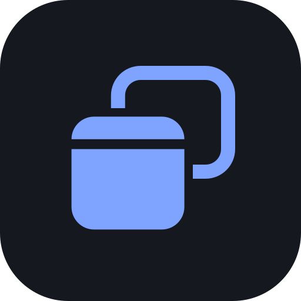

JAT OS brand book
How JAT OS looks, speaks, moves and fits together: the identity, the token set, the component library and the rules that let one desktop environment express itself as four shell styles across desktop, tablet and phone.
- Planned
- Specified here, not built yet. Never shown in the product as if it works.
- In the example
- Runs today in the live example.
Brand foundation
JAT OS turns a WordPress site into a desktop environment people can step into and out of. It is a working layer for real tools, not a novelty skin, and the website underneath always stays the website.
Mission, vision and positioning
- Mission
- Give independently built web apps one coherent place to work side by side, with windows, a launcher and settings that behave the way people already expect from a desktop, without asking the host website to give anything up.
- Vision
- A portable desktop environment for the open web. It starts inside WordPress, is built so it can stand on its own, and lets any well-described web app join the workspace while keeping its own boundaries.
- Positioning
- JAT OS is a modular operating layer delivered as a WordPress plugin. It unifies a family of independently hosted PWAs, including apps that cannot be embedded, under one shell, one design system and one permission-controlled app registry, while the host site's pages, permalinks, SEO, theme and block editor stay untouched.
Product philosophy
Five principles settle disagreements. When two of them pull apart, the earlier one wins.
- The website comes first; the OS is an opt-in layer. Entering OS mode never compromises the site's content, URLs, SEO, theme or editor, and leaving is always one clear action away.
- One coherent shell around honest app boundaries. Apps look and behave like one family. The shell never hides real limits: an app that can't be embedded, an offline gap, separate storage.
- Specify before simulating. Every control does something that has been specified. Concepts are labeled as concepts and future capabilities are named as future.
- Adapt to the device, don't shrink. Each class of device and input method gets a layout and an interaction model that fits it.
- Portable by construction. The shell, tokens and components stay independent of WordPress so JAT OS can become a standalone platform.
Personality
JAT OS should leave people feeling oriented, in control and unhurried, and confident that their work is safe. Each trait is defined by what it refuses as much as by what it is.
| JAT OS is | and is not | In the interface, that means |
|---|---|---|
| Exact | fussy | Everything sits on the 4 px grid and every radius comes from one scale. No ornament without a job. |
| Calm | dull | Neutral chrome and one accent, spent on what you can act on. The wallpaper and the apps bring the color. |
| Capable | intimidating | Snapping, workspaces and shortcuts are there for people who look for them. The defaults work without them. |
| Honest | apologetic | It says plainly when an app opens in a new tab, is offline or is planned, and offers the next step. |
| Familiar | borrowed | Patterns people already know from desktops, drawn in JAT geometry, never with other platforms' names, logos or icons. |
| Hospitable | a takeover | The website stays the default. Entering is a choice and leaving returns you to the page you came from. |
Audiences and use cases
The audience is developers, designers and makers who use the Craft apps for real work: vector illustration, photo editing, interface design and PDF work. The first release serves three groups on a tiered model. Exactly what guests can and cannot do is still an open decision.
| Audience | What they get | Primary use cases |
|---|---|---|
| Guests | A guest desktop with the Jeremy Anderson Tech apps, no account needed. Theme and shell style are kept in this browser only. | Try VectorCraft straight from the website. Open PdfCraft for a quick document. Get a feel for the ecosystem before signing in. |
| Signed-in makers | Preferences that follow their WordPress account, saved and restored workspaces, possibly more apps. Planned | Illustrate in VectorCraft with a reference open in PdfCraft beside it. Maximize FigCraft for focused design. Come back tomorrow to the same layout. |
| Site administrators | Admin screens for registered apps, permissions, branding and the default shell style. Planned | Register a new app from its manifest. Decide which roles may enter OS mode. Set the brand and default style for the site. |
Naming and product architecture
The product is layered. Each layer has its own naming rule, so a name alone tells you where a thing lives.
 VectorCraft
VectorCraft PhotoCraft
PhotoCraft FigCraft
FigCraft PdfCraft
PdfCraft| Thing | Rule | Write | Not |
|---|---|---|---|
| Product | Two words, both capitalized. Lowercase jat-os only in slugs, paths and repositories. | JAT OS | JATOS, Jat OS, JAT-OS, the JAT OS |
| Company | Full name in the endorsement line, About and legal text. "JAT" alone appears only inside the product name. | Jeremy Anderson Tech | JAT (alone), JA Tech |
| Craft apps | One word: a noun plus "Craft", both capitalized, nothing between. | VectorCraft, PdfCraft | Vector Craft, PDFCraft, Pdfcraft |
| System apps | Plain nouns that say what the app is. No brand prefix. | Settings, Files, App Manager | JAT Settings, FileCraft, JATfiles |
| Shell styles | One capitalized noun naming the main navigation surface. Comparisons to other platforms belong in documentation only. | Dock, Taskbar, Shelf, Activities | Mac mode, Windows style, Chrome shelf |
| Shell features | Lowercase common nouns in running text. | the launcher, quick settings, workspaces | the Launcher, Quick Settings |
| Identifiers | Reverse-domain app IDs; jat- for CSS classes and custom elements. | com.jeremyandersontech.vectorcraft | vectorCraft, vc-app-1 |
Voice and tone
JAT OS speaks like a capable colleague who has done this before: plain, specific and brief. The voice stays the same everywhere; the tone shifts with the moment.
| Moment | Tone | Example |
|---|---|---|
| Entering OS mode for the first time | Welcoming, short, no tour unless asked | "Your desktop is ready. Open the launcher to start an app." |
| Routine actions | Quiet. Confirm only what isn't visible | "Theme changed to Dark" |
| Limits and fallbacks | Matter-of-fact. Name the limit and the way forward | "PhotoCraft opens in a new tab. Its site doesn't allow embedding." |
| Errors | Calm and specific. Never blame the person | "Couldn't reach VectorCraft. Check your connection, then try again." |
| Destructive actions | Serious, precise about consequences | "Remove VectorCraft from this desktop? Your files in VectorCraft are not affected." |
UI writing guidelines
| Rule | Write | Not |
|---|---|---|
| Buttons name the action they take | Open in new tab · Remove app | OK · Yes · Submit |
| Sentence case everywhere, including titles and menus | Default shell style | Default Shell Style |
| Errors name the problem, then the recovery | VectorCraft didn't load. Try again, or open it in a new tab. | Error: refused to connect. |
| No exclamation marks, no celebration | Workspace saved | Saved! |
| Confirmations say what will happen | Leave JAT OS? Open windows will close. Unsaved work in apps may be lost. | Are you sure? |
| Describe outcomes, not mechanisms | Opens in a new tab | External launch mode (iframe refused) |
| Never blame the person | PdfCraft can't open this file type. | You chose an invalid file. |
| An ellipsis means more input follows | Rename… · Change wallpaper… | Rename (when it acts immediately) |
| Numerals, real units, a thin space before × | 2 windows · 1,180 × 760 · 4.2 MB | two windows · 1180x760 · 4.2mb |
| Name the future honestly | Workspace sync is planned. | A switch that does nothing |
Logo and identity
The mark is two rounded windows. The outlined back window sits top right, the filled front window bottom left with its title strip. Read together, the back window's right edge is the stem of a J and the front window is its bowl: the company initial, made from the product's own object.
Primary logo and variants
The wordmark sets "JAT" in Inter Display Bold and "OS" in Inter Display Medium in secondary ink, converted to outlines so it never depends on a loaded font. Use the full-color logo on light grounds and the reversed logo, with the mark in Blue 400, on dark grounds: JAT Blue on the dark page measures only 3.95:1, Blue 400 measures 7.33:1.
 MarkWhere space is tight or the name is already present.jat-os-mark.svg
MarkWhere space is tight or the name is already present.jat-os-mark.svg- ReversedDark interface surfaces and dark marketing grounds.jat-os-logo-reversed.svg


App and install iconLauncher, home screen and PWA install. Light and dark tiles.jat-os-app-icon.svg · dark- Maskable iconFull-bleed for platforms that crop to their own shape. Artwork stays inside the inner 80% safe circle.jat-os-maskable.svg
- Favicon at 16 and 32 pxMark on a JAT Blue tile, shown at actual size.favicon.svg
- Mark, currentColorInline SVG that takes the text color of its context, for UI use.jat-os-mark-currentcolor.svg
- Endorsement lineTies the product to the company without putting the full company name on every element. Set below or beside the logo, never inside it; at least 16 units of the logo's grid away.jat-endorsement.svg


Construction
- A · Back window
- x 20.5, y 4.5, 39 × 35 u, corner radius 8, stroke 5, outlined. Its right edge is the stem of the J.
- B · Front window
- x 4, y 20, 40 × 40 u, radius 8, filled. Body from y 31.5 to 60.
- C · Title strip
- y 20 to 28 (8 u), separated from the body by a 3.5 u gap that reads as the title bar.
- D · Clearance
- The back window's stroke stops 3 u short of the front window on every side. The shaded outline (x 1, y 17, 46 × 42, r 11) masks it.
- Color
- One color per mark. JAT Blue
#2F6BFFon light, Blue 400#7FA4FFon dark, or a single mono ink.
Clear space and minimum size
Clear space is twice the height of the front window's title strip: 16 units of the 64-unit grid, a quarter of the mark's height, on every side. Nothing enters it: no text, edge, other logo or busy image.
favicon.svg, the mark on a tile.Correct and incorrect usage
Full color on a light, quiet ground
Reversed on a dark ground
On a wallpaper, on a solid plate
Don't stretch or squash
Don't recolor
Don't rotate
Don't add glows, shadows or effects
Don't mirror or rearrange the windows
Don't set it on a busy wallpaper without a plate
Color
The interface is built from a cool slate neutral and a single blue. JAT Blue #2F6BFF is the brand; its deeper sibling #1F5AE6 is the interactive fill, because white text on it measures 5.73:1. Wallpapers and app tiles bring the rest of the color.
Reference palette
Reference colors are raw values. Interface code never uses them directly; it uses the semantic tokens below, which point at them. Each swatch lists HEX, RGB and the CSS custom property.
Slate, the neutral scale
- Slate 0Light raised surfaces
#FFFFFFrgb(255 255 255)--ref-slate-0 - Slate 25Light page, app body
#F8F9FBrgb(248 249 251)--ref-slate-25 - Slate 50Light sidebars, title bars
#F1F3F6rgb(241 243 246)--ref-slate-50 - Slate 100Light hover wells, desktop
#E6E9EErgb(230 233 238)--ref-slate-100 - Slate 200
#D3D8E0rgb(211 216 224)--ref-slate-200 - Slate 300
#B6BDC9rgb(182 189 201)--ref-slate-300 - Slate 400Dark tertiary text
#8C95A4rgb(140 149 164)--ref-slate-400 - Slate 500Reference grey (light tertiary text uses #5F6878)
#6A7383rgb(106 115 131)--ref-slate-500 - Slate 600Light secondary text
#5A6373rgb(90 99 115)--ref-slate-600 - Slate 700
#373E4Brgb(55 62 75)--ref-slate-700 - Slate 800Dark hover wells, tooltips
#252A34rgb(37 42 52)--ref-slate-800 - Slate 850Dark cards, inputs
#1C2028rgb(28 32 40)--ref-slate-850 - Slate 900Light primary text, dark page
#15181Ergb(21 24 30)--ref-slate-900 - Slate 950Dark desktop
#0E1014rgb(14 16 20)--ref-slate-950
Blue, the brand and accent scale
- Blue 50Light accent-soft
#EEF3FFrgb(238 243 255)--ref-blue-50 - Blue 100
#DCE6FFrgb(220 230 255)--ref-blue-100 - Blue 200
#B9CCFFrgb(185 204 255)--ref-blue-200 - Blue 300Dark accent-soft text
#8AB0FFrgb(138 176 255)--ref-blue-300 - Blue 400Dark links, focus, reversed mark
#7FA4FFrgb(127 164 255)--ref-blue-400 - Blue 500JAT Blue: brand, logo, focus (light)
#2F6BFFrgb(47 107 255)--ref-blue-500 - Blue 600Interactive fill (accent)
#1F5AE6rgb(31 90 230)--ref-blue-600 - Blue 700Accent hover
#1747BDrgb(23 71 189)--ref-blue-700 - Blue 800Accent pressed
#12378Frgb(18 55 143)--ref-blue-800
Status hues
- Green 600Success (light)
#147A41rgb(20 122 65)--ref-green-600 - Green 300Success (dark)
#55CF93rgb(85 207 147)--ref-green-300 - Amber 700Warning (light)
#94590Argb(148 89 10)--ref-amber-700 - Amber 300Warning (dark)
#F2B856rgb(242 184 86)--ref-amber-300 - Red 600Danger (light)
#B42330rgb(180 35 48)--ref-red-600 - Red 300Danger (dark)
#FF7A82rgb(255 122 130)--ref-red-300
App identity colors
- VectorCraftVectorCraft tile
#7B4DFFrgb(123 77 255)--app-vectorcraft - PhotoCraftPhotoCraft tile
#0E8F8Argb(14 143 138)--app-photocraft - FigCraftFigCraft tile
#E2471Frgb(226 71 31)--app-figcraft - PdfCraftPdfCraft tile
#E89B0Crgb(232 155 12)--app-pdfcraft - SystemSystem app tiles
#4E5666rgb(78 86 102)--app-system
Semantic tokens, light and dark
Semantic tokens carry meaning, and only their values change between themes. Every swatch below reads the live CSS variable inside a wrapper scoped with data-theme="light" or data-theme="dark", so the two columns always match tokens.css.
Surfaces and elevation
| Token and role | Light | Dark |
|---|---|---|
--bg-desktopDesktop behind the wallpaper; shows while it loads | --ref-slate-100 #E6E9EE | --ref-slate-950 #0E1014 |
--surface-0App body and page ground | --ref-slate-25 #F8F9FB | --ref-slate-900 #15181E |
--surface-1Cards, inputs, specimen stages | --ref-slate-0 #FFFFFF | --ref-slate-850 #1C2028 |
--surface-2Sidebars and toolbars | --ref-slate-50 #F1F3F6 | #191c23 |
--surface-3Hover wells, selected rows | --ref-slate-100 #E6E9EE | --ref-slate-800 #252A34 |
--surface-raisedMenus, popovers, dialogs, toasts | --ref-slate-0 #FFFFFF | #20242d |
--surface-sunkenWells, code blocks, inset areas | --ref-slate-50 #F1F3F6 | #121419 |
--shadow-smButtons, switch thumb | 0 1px 2px rgb(14 16 20 / 0.08), 0 1px 1px rgb(14 16 20 / 0.04) | 0 1px 2px rgb(0 0 0 / 0.4) |
--shadow-mdTooltips, small floating parts | 0 4px 12px rgb(14 16 20 / 0.10), 0 1px 3px rgb(14 16 20 / 0.08) | 0 4px 12px rgb(0 0 0 / 0.4), 0 1px 3px rgb(0 0 0 / 0.3) |
--shadow-lgMenus, popovers, toasts | 0 12px 32px rgb(14 16 20 / 0.16), 0 2px 8px rgb(14 16 20 / 0.08) | 0 12px 32px rgb(0 0 0 / 0.5), 0 2px 8px rgb(0 0 0 / 0.3) |
--shadow-windowFocused window, dialogs | 0 22px 48px rgb(14 16 20 / 0.22), 0 4px 12px rgb(14 16 20 / 0.10), 0 0 0 1px rgb(14 16 20 / 0.10) | 0 22px 48px rgb(0 0 0 / 0.55), 0 4px 12px rgb(0 0 0 / 0.35), 0 0 0 1px rgb(255 255 255 / 0.10) |
--shadow-window-inactiveUnfocused windows | 0 10px 24px rgb(14 16 20 / 0.12), 0 0 0 1px rgb(14 16 20 / 0.08) | 0 10px 24px rgb(0 0 0 / 0.4), 0 0 0 1px rgb(255 255 255 / 0.06) |
Window chrome and translucent bars
| Token and role | Light | Dark |
|---|---|---|
--chrome-titlebarTitle bar of the focused window | --ref-slate-50 #F1F3F6 | #1d2129 |
--chrome-titlebar-inactiveTitle bar of unfocused windows | --ref-slate-25 #F8F9FB | #181b21 |
--chrome-barMenu bar, taskbar, dock, shelf over wallpaper (with backdrop blur) | rgb(248 249 251 / 0.78) | rgb(21 24 30 / 0.72) |
--chrome-bar-solidFallback when transparency is reduced or blur is unsupported | --ref-slate-25 #F8F9FB | --ref-slate-900 #15181E |
--chrome-blurBackdrop blur radius for bars; 0 under reduced transparency | 24px | 24px same in dark |
--scrimBehind modal dialogs and the phone app switcher | rgb(14 16 20 / 0.32) | rgb(0 0 0 / 0.5) |
--desktop-labelDesktop icon labels, always with the label shadow | Aa#ffffff | Aa#ffffff same in dark |
Text hierarchy
| Token and role | Light | Dark |
|---|---|---|
--text-primaryTitles, body, values | Aa--ref-slate-900 #15181E | Aa#eef0f4 |
--text-secondaryDescriptions, labels in property lists | Aa--ref-slate-600 #5A6373 | Aa#a9b1be |
--text-tertiaryPlaceholders, timestamps, shortcut hints | Aa#5f6878 #5F6878 | Aa--ref-slate-400 #8C95A4 |
--text-disabledDisabled labels only (exempt from contrast minimums) | Aa--ref-slate-400 #8C95A4 | Aa#5d6574 |
--text-on-accentLabels on accent fills | Aa#ffffff | Aa#ffffff same in dark |
--text-linkInline links | Aa--ref-blue-600 #1F5AE6 | Aa--ref-blue-400 #7FA4FF |
Borders and dividers
| Token and role | Light | Dark |
|---|---|---|
--border-subtleEdges of raised surfaces and stages | rgb(21 24 30 / 0.08) | rgb(255 255 255 / 0.07) |
--border-defaultInputs, secondary buttons | rgb(21 24 30 / 0.14) | rgb(255 255 255 / 0.12) |
--border-strongHovered inputs, checkbox outlines, scrollbar thumbs | rgb(21 24 30 / 0.28) | rgb(255 255 255 / 0.24) |
--dividerRules between rows and sections | rgb(21 24 30 / 0.08) | rgb(255 255 255 / 0.07) |
Accent
| Token and role | Light | Dark |
|---|---|---|
--accentPrimary buttons, checked controls, menu highlight, progress | --ref-blue-600 #1F5AE6 | --ref-blue-600 #1F5AE6 |
--accent-hoverHovered accent fill | --ref-blue-700 #1747BD | #3a72ff |
--accent-pressedPressed accent fill | --ref-blue-800 #12378F | --ref-blue-700 #1747BD |
--accent-softActive icon buttons, selected search result | --ref-blue-50 #EEF3FF | rgb(47 107 255 / 0.16) |
--accent-soft-textText and icons on accent-soft | Aa--ref-blue-700 #1747BD | Aa--ref-blue-300 #8AB0FF |
--brandJAT Blue: logo, brand moments. Never a button fill | --ref-blue-500 #2F6BFF | --ref-blue-500 #2F6BFF same in dark |
Focus and selection
| Token and role | Light | Dark |
|---|---|---|
--focus-ring2px focus outline, offset 2px | --ref-blue-500 #2F6BFF | --ref-blue-400 #7FA4FF |
--selection-bgText selection, input focus halo | rgb(47 107 255 / 0.18) | rgb(127 164 255 / 0.26) |
--selection-fillSelected desktop-icon label, selected list rows | --ref-blue-600 #1F5AE6 | --ref-blue-600 #1F5AE6 same in dark |
--desktop-selectionRubber-band selection and selected desktop icons | rgb(47 107 255 / 0.16) | rgb(47 107 255 / 0.16) same in dark |
--desktop-selection-borderEdge of the rubber-band selection | rgb(47 107 255 / 0.6) | rgb(47 107 255 / 0.6) same in dark |
Status
| Token and role | Light | Dark |
|---|---|---|
--successSuccess text, icons, dots | --ref-green-600 #147A41 | --ref-green-300 #55CF93 |
--success-softSuccess badge and banner ground | #e3f5ea | rgb(85 207 147 / 0.14) |
--warningWarning text, icons, dots | --ref-amber-700 #94590A | --ref-amber-300 #F2B856 |
--warning-softWarning ground | #fdf1dc | rgb(242 184 86 / 0.14) |
--dangerErrors and destructive actions | --ref-red-600 #B42330 | --ref-red-300 #FF7A82 |
--danger-softError ground, destructive hover | #fde6e8 | rgb(255 122 130 / 0.14) |
--infoInformational icons | --ref-blue-600 #1F5AE6 | --ref-blue-400 #7FA4FF |
--info-softInformational ground | --ref-blue-50 #EEF3FF | rgb(127 164 255 / 0.14) |
--window-close-hoverClose button hover (rectangular controls) | #d92d38 | #d92d38 same in dark |
Accessibility-tested pairs
WCAG 2.2 AA is the floor until a conformance target is confirmed: 4.5:1 for text, 3:1 for large text (24 px, or 18.66 px bold) and for the graphical parts of controls. Ratios are computed from the token values, with translucent tokens composited over the surface they sit on.
| Foreground | Background | Ratio | Result |
|---|---|---|---|
| Light theme | |||
Aatext-primary #15181E | surface-0 #F8F9FB | 16.88 | AA text |
| Aatext-primary | surface-3 #E6E9EE | 14.61 | AA text |
Aatext-secondary #5A6373 | surface-0 | 5.75 | AA text |
| Aatext-secondary | surface-1 #FFFFFF | 6.06 | AA text |
| Aatext-secondary | surface-3 | 4.98 | AA text |
Aatext-tertiary #5F6878 | surface-1 | 5.62 | AA text |
| Aatext-tertiary | surface-0 | 5.33 | AA text |
| Aatext-tertiary | surface-2 #F1F3F6 | 5.05 | AA text |
| Aatext-tertiary | surface-3 | 4.62 | AA text |
Aatext-on-accent #FFFFFF | accent #1F5AE6 | 5.73 | AA text |
| Aatext-on-accent | accent-hover #1747BD | 7.86 | AA text |
| Aawhite | brand #2F6BFF | 4.50 | Passes at the threshold only, so brand is never a button fill |
Aatext-link #1F5AE6 | surface-1 | 5.73 | AA text |
Aaaccent-soft-text #1747BD | accent-soft #EEF3FF | 7.07 | AA text |
Aasuccess #147A41 | success-soft #E3F5EA | 4.76 | AA text |
Aawarning #94590A | warning-soft #FDF1DC | 5.09 | AA text |
Aadanger #B42330 | danger-soft #FDE6E8 | 5.33 | AA text |
| Aadanger | surface-1 | 6.51 | AA text |
| Aawhite | window-close-hover #D92D38 | 4.79 | AA (close glyph) |
| Aatext-primary | selection-bg over white #DAE4FF | 13.99 | AA text |
focus-ring #2F6BFF | surface-1 | 4.50 | AA non-text (3:1) |
Aatext-disabled #8C95A4 | surface-1 | 3.02 | Exempt: disabled controls only |
| Dark theme | |||
Aatext-primary #EEF0F4 | surface-0 #15181E | 15.58 | AA text |
| Aatext-primary | surface-3 #252A34 | 12.61 | AA text |
Aatext-secondary #A9B1BE | surface-1 #1C2028 | 7.55 | AA text |
| Aatext-secondary | surface-3 | 6.66 | AA text |
Aatext-tertiary #8C95A4 | surface-0 | 5.88 | AA text |
| Aatext-tertiary | surface-raised #20242D | 5.14 | AA text |
| Aatext-on-accent | accent #1F5AE6 | 5.73 | AA text |
Aatext-link #7FA4FF | surface-1 | 6.73 | AA text |
Aaaccent-soft-text #8AB0FF | accent-soft over surface-1 #1F2C4A | 6.42 | AA text |
Aasuccess #55CF93 | success-soft over surface-1 #243837 | 6.33 | AA text |
Aawarning #F2B856 | warning-soft over surface-1 #3A352E | 6.81 | AA text |
Aadanger #FF7A82 | danger-soft over surface-1 #3C2D35 | 5.16 | AA text |
| Aatext-primary | selection-bg over surface-1 #364260 | 8.74 | AA text |
focus-ring #7FA4FF | surface-0 | 7.33 | AA non-text (3:1) |
Aabrand #2F6BFF | surface-0 | 3.95 | Too low for text, hence the reversed logo uses Blue 400 |
| Over wallpaper and translucent bars | |||
Aadesktop-label #FFFFFF | JAT Blue wallpaper #1F4FCC | 6.89 | AA text |
| Aadesktop-label | Graphite wallpaper #1C2028 | 16.32 | AA text |
| Aadesktop-label | Ridge Day sky #C9D7F5 | 1.45 | Fails alone. The label shadow is mandatory |
| Aadesktop-label | Ridge Day hills #7F9FE6 | 2.62 | Fails alone. The label shadow is mandatory |
| Aatext-primary | light chrome-bar over Ridge Day sky #EEF2FA | 15.84 | AA text |
| Aatext-primary | light chrome-bar over darkest ridge #C8CFE3 | 11.42 | AA text |
| Aatext-primary (dark) | dark chrome-bar over Ridge Day sky #474D5A | 7.43 | AA text |
| Aatext-primary (dark) | dark chrome-bar over JAT Blue #18274F | 12.76 | AA text |
| App tile glyphs (graphical, 3:1 minimum) | |||
| Aawhite glyph | VectorCraft #7B4DFF | 4.83 | AA non-text |
| Aawhite glyph | PhotoCraft #0E8F8A | 3.95 | AA non-text; never put text on this tile |
| Aawhite glyph | FigCraft #E2471F | 4.07 | AA non-text; never put text on this tile |
Aadark glyph #1B1300 | PdfCraft #E89B0C | 8.01 | AA non-text (light tile, dark glyph) |
| Aawhite glyph | System #4E5666 | 7.38 | AA non-text |
Wallpaper-dependent contrast
People choose their own wallpaper, so nothing that carries meaning may depend on it.
- Desktop labels are always
--desktop-labelwhite with--desktop-label-shadow. The shadow is what keeps them legible on light wallpapers like Ridge Day, where white alone measures 1.45:1. - Bars (menu bar, taskbar, dock, shelf) use
--chrome-barwithbackdrop-filter: blur(var(--chrome-blur)), 24 px. Translucency is only legible because the blur flattens what's behind it. - Solid fallback. Under
prefers-reduced-transparency: reduce, the token file swaps--chrome-barfor--chrome-bar-solidand sets the blur to 0. Wherebackdrop-filteris unsupported, use@supports not (backdrop-filter: blur(1px))to do the same. - Windows, menus and dialogs are always opaque. Only bars and menus may blur; windows never do.
Usage rules
- Accent is for action and state only: primary buttons, selection, focus, checked controls, the highlighted menu item and progress. It never decorates headings, borders or empty space.
- One primary action per view. If two things are blue, one of them is wrong.
- Brand is for identity.
--brandappears in the logo and brand moments such as the welcome screen. It is never a button fill; use--accent. - App colors are for app tiles only. VectorCraft purple never signals "selected", and a red FigCraft tile never signals an error. State always comes from the semantic tokens.
- Status colors come with words or icons. A red dot alone is not an error message. Color is never the only signal.
- Dark is designed, not inverted. Dark surfaces step up in lightness as they rise; shadows deepen and windows gain a 1 px light hairline instead of relying on shadow alone.
Typography
Inter for everything people read, JetBrains Mono for things people type or copy: code, values, paths and shortcuts. Inter's optical-size axis switches to its Display cut at large sizes, so headings tighten without a second family.
Type scale
| Token | Specimen | Size | Line height | Weight | Tracking | Use |
|---|---|---|---|---|---|---|
--text-4xl | Desktop | 40–72 px fluid | 1.15 | 700 | −0.03em | Display. Brand book and welcome screen only |
--text-3xl | Workspaces | 36 px | 1.15 | 700 | −0.03em | Welcome and brand headings |
--text-2xl | Appearance | 26 px | 1.3 | 600 | −0.011em | Settings page titles |
--text-xl | Installed apps | 20 px | 1.3 | 600 | −0.011em | Panel titles |
--text-lg | Remove VectorCraft? | 16 px | 1.5 | 600 / 400 | −0.011em / 0 | Dialog titles; body text on phones and in long reading |
--text-md | Opens in a window | 14 px | 1.5 | 400 | 0 | Body inside apps, input text |
--text-sm | PhotoCraft Snap left | 13 px | 1.5 | 400 / 500 / 600 | 0 | Default UI text, menus, lists; window titles in 600 |
--text-xs | Updated 2 min ago | 12 px | 1.5 | 400 / 500 | 0 | Captions, timestamps, menu bar, desktop labels |
--text-2xs | Planned | 11 px | 1.5 | 600 | +0.01em | Badges and shortcut hints. Never body text |
Roles
- Display
--text-4xland--text-3xl, weight 700,--tracking-display. Only in the brand book, the welcome screen and About. Never inside a window.- Window titles
- 13 px semibold (
--text-sm, 600), single line. Inactive windows switch the title to--text-tertiary; the weight stays the same so the bar doesn't jump. - Navigation labels
- 13 px medium for sidebars, tabs, menu-bar items and launcher categories. 12 px medium for the menu bar and labels under icons.
- Body
- 14 px regular inside apps and system apps, 16 px for long reading such as this page, help and About, and for all body text on phones. Measure 65–75 characters.
- Microcopy
- 12 px in
--text-secondaryfor hints, timestamps and metadata. Tertiary only on--surface-0and--surface-1, where it passes AA. - Mono
- JetBrains Mono 400 and 500 at 0.92em of the surrounding text, for code, token names, paths, URLs, file sizes in inspectors and keyboard keys. Never for labels, headings or decoration.
- Features
cv11(single-story a) andss01(open digits) are on globally in.jat. Tabular numerals (.num,time, numeric cells) for anything that updates or lines up.
Truncation, numerals and responsive rules
PdfCraft — Quarterly planning notes and supporting documents.pdfshortName.- Never truncate a button. If a label doesn't fit, rewrite it shorter or let the button wrap to its own line.
- Never truncate in the middle of a file extension for file names; truncate the stem and keep
.pdfvisible where space allows. - Phones (under 600 px): body text and inputs are 16 px (also prevents mobile browsers zooming on focus); menu rows grow to 44 px; section headings step down one size, for example
--text-3xlto--text-2xl. - Respect user font size. All type tokens are in rem, so the browser's font-size setting scales the whole interface; layouts must survive 200% text zoom.
Iconography
Two families. Interface icons are line drawings that follow text color. App icons are filled tiles that carry each app's identity color. They never swap roles.
Interface icons
The 41 symbols in assets/icons.svg, used as <svg class="jat-icon"><use href="…/icons.svg#i-search"/></svg>.
- Grid
- 24 × 24 units with a 2-unit padding. Round shapes may overshoot the live area by up to 0.75 u for optical balance.
- Stroke
- 1.75 u, round caps and joins, 2 u corner radius on rectangles. Filled icons (launcher, more) use dots of 1.6–1.75 u radius to match stroke weight.
- Sizes
- 16 px in dense rows, 20 px default, 24 px in bars and empty states. Never scale a 16 px usage up to fill a 32 px slot; use 24.
- Color
currentColor.--text-secondaryat rest,--text-primaryon hover.- Active
--accent-softbackground with--accent-soft-texticon, as on a pressed icon button.- Never
- Emoji or Unicode symbols in place of an icon; icons from other platforms; mixed stroke weights in one row.
16
20
24
Rest and active
App icons
Every app tile, including third-party ones, follows the same construction so the dock and launcher read as one family.
- Tile
- 64 × 64 units, corner radius 14.5 u, which is 22.66% of the tile at any size (
.jat-apptilecomputes it). - Highlight
- The top 20 u carry a white band at 10% opacity: a light source from above, not a gradient.
- Hairline
- 1 px inner stroke in black at 10%, so pale tiles hold their edge on light surfaces.
- Glyph
- White, drawn on a 3.5 u stroke within the central 40 u. Light tiles (PdfCraft amber, Launcher) take a dark glyph instead.
- Color
- One identity color per app, from the app tokens. System apps use
--app-systemor the blues. - Sizes
- 16 title bar, 32 search results and toasts, 36–48 dock and taskbar, 52 desktop, 56 launcher.
- VectorCraft
- PhotoCraft
- FigCraft
- PdfCraft
- Launcher
- Settings
- App Manager
- Files
- About JAT OS
- Website
Shell styles
One brand, one token set, one component library, four arrangements. A shell style changes geometry and placement through the [data-shell] tokens; colors, type, icons and components stay the same, so apps never need to know which style is active. Styles switch live from Settings.
Top menu bar, floating dock, controls on the left.
Bottom taskbar, Start panel, controls on the right.
Bottom shelf, full-screen launcher, round icon controls.
Top bar, workspace overview with app grid.
Tokens that change
| Token | Dock | Taskbar | Shelf | Activities |
|---|---|---|---|---|
--window-radius | 12 px (radius-lg) | 8 px (radius-md) | 12 px | 12 px |
--titlebar-height | 38 px | 36 px | 40 px | 44 px |
--window-controls-side | start | end | end | end |
--window-control-shape | circle (colored, glyph on hover) | rect | circle-icon | circle-icon (filled well) |
--topbar-height | 28 px | 0 | 0 | 32 px |
--bottombar-height | 0 (dock floats, 64 px) | 48 px | 56 px | 0 |
--dock-icon | 48 px | 36 px | 40 px | 48 px (dash) |
--menu-radius | 8 px | 8 px | 12 px | 12 px |
--panel-radius | 16 px | 8 px | 22 px | 16 px |
Layout rules
| Dock | Taskbar | Shelf | Activities | |
|---|---|---|---|---|
| Primary navigation | Floating dock, centered, 8 px above the bottom edge; hides behind maximized windows only when the person turns on auto-hide. | Full-width bar at the bottom: Start, pinned and running apps centered, status at the end. | Full-width shelf at the bottom: launcher button at the start, apps centered, status pill at the end. | Top bar with an Activities button at the start, clock centered, status at the end. The dash appears in the overview. |
| Launcher | Panel rising from the dock, search first, app grid below. | Start panel anchored to the taskbar: search, pinned grid, recent. | Full-screen launcher over a scrim, search at the top. | The overview zooms windows out; the app grid sits below the workspace strip. |
| System status | Menu bar end: clock, quick settings, notifications. | Taskbar end: clock and date, quick settings, notifications. | Status pill on the shelf opens quick settings and notifications together. | Top bar end opens one system menu; notifications drop from the clock. |
| Window title | Centered, controls at the start. | Start-aligned after the app tile, controls at the end. | Start-aligned, round icon controls at the end. | Start-aligned, round filled controls at the end; taller bar. |
| Running apps | 4 px dot under the tile. | Pill under the icon; wider and accent-colored for the focused window. | 4 px dot under the tile. | Dot under the tile in the dash. |
| Work area | Viewport minus 28 px top bar; maximized windows stop above the dock. | Viewport minus 48 px. | Viewport minus 56 px. | Viewport minus 32 px. |
Real title bars
Built from .jat-window, .jat-titlebar and .jat-winbtn inside a data-shell wrapper; nothing below is restyled. Dock orders its controls close, minimize, maximize on the left; every other style orders them minimize, maximize, close on the right, so close is always at the outer edge.
VectorCraftPhotoCraftFigCraftPdfCraftComponents
The live library in assets/components.css. Every specimen here uses the real jat- classes, so what you see is what the shell ships. Each one is followed by its specification.
Buttons and icon buttons
- Anatomy
- Label, optional 16–20 px leading icon, 1 px border,
--shadow-sm. Icon buttons are a 32 px square with a 20 px icon and no border. - Dimensions
- Heights
--size-control-sm28,-md32,-lg40; 44 (--size-touch) on coarse pointers. Padding 12 px, gap 8 px, radius--radius-md. - Variants
- Primary (accent fill), default, ghost, danger (danger text, danger-soft on hover). Pressed icon buttons use
aria-pressed="true"and accent-soft. - States
- Hover: surface-3 or accent-hover. Pressed: 0.5 px down, no shadow. Disabled: 45% opacity, not focusable by pointer. Busy:
aria-busy="true"hides the label behind a spinner and keeps the width. - Keyboard and focus
- Enter and Space activate. 2 px
--focus-ringoutline at 2 px offset, keyboard focus only (:focus-visible). - Accessibility
- Native
<button type="button">. Icon buttons needaria-labeland a matching tooltip. Busy buttons keep their accessible name. - Motion
- Color changes over
--dur-instant(80 ms) linear; press uses--ease-out. - Usage
- One primary per view or dialog, placed last in the action row. Labels are verbs: "Open app", "Remove app".
- Avoid
- Two primaries side by side. "OK" or "Click here". Icon-only destructive actions. Disabling a button without saying why nearby.
Text field, search and select
- Anatomy
- Label above, input, then hint or error below. Search adds a 16 px leading icon at 10 px inset. Select draws its own chevron.
- Dimensions
- 32 px high, 12 px horizontal padding,
--radius-md, 1 px--border-default. 14 px text on desktop, 16 px on phones. - States
- Hover:
--border-strong. Focus: border becomes--focus-ringplus a 3 px--selection-bghalo. Invalid:aria-invalid="true", danger border and an error line with an icon. Disabled: surface-2 fill, disabled text. - Keyboard and focus
- Tab in and out; Escape clears a search field first, then closes its panel. The caret is
--accent. - Accessibility
- Every input has a visible
<label>; hints and errors are tied witharia-describedby. Placeholders are examples, never labels. - Usage
- Validate on blur or submit, not on every keystroke. Errors say what to type, not what went wrong internally.
- Avoid
- Placeholder-only labels. Red borders without a message. Custom selects that break native keyboard and screen-reader behavior.
Checkbox, radio, switch and segmented control
- Anatomy
- Checkbox and radio: 16 px box, 1.5 px
--border-strong, label 8 px to the right. Switch: 36 × 20 track, 16 px thumb. Segmented: 2 px inset well on surface-3, 28 px segments. - States
- Checked fills with
--accentand a white mark. Disabled at 45% opacity. Segmented selection is a raised surface-1 segment with--shadow-sm. - Keyboard and focus
- Space toggles checkboxes and switches. Radios and segmented controls are one tab stop; arrow keys move and select.
- Accessibility
- Native inputs inside a
<label>. Switches addrole="switch". Segmented controls arerole="radiogroup"withrole="radio"andaria-checked. - Motion
- Thumb slides over
--dur-fastwith--ease-out; the track color follows with--ease-standard. - Usage
- Switches apply immediately (settings). Checkboxes collect choices that are applied later (forms). Segmented controls for two to four mutually exclusive views or modes.
- Avoid
- Switches in forms with a Save button. Segmented controls with more than four options or long labels. A disabled switch for a planned feature: say it's planned instead.
Tabs
- Anatomy
- Row of 36 px tabs over a 1 px divider; the selected tab gets a 2 px accent underline inset 12 px from its edges.
- Keyboard and focus
- One tab stop. Left and Right move between tabs and select them; Home and End jump to the ends. Tab moves into the panel. Try it above.
- Accessibility
role="tablist",role="tab"witharia-selectedandaria-controls,role="tabpanel"witharia-labelledby. Inactive tabs havetabindex="-1".- Responsive
- On phones, tabs scroll horizontally inside their row; they never wrap to two lines.
- Usage
- Peer views of one object. Two to six tabs with one- or two-word labels.
- Avoid
- Tabs as navigation between unrelated pages. Nested tab rows. Hiding errors on an unselected tab without a marker.
Menu and context menu
- Anatomy
- Raised surface, 4 px padding,
--menu-radiusfrom the shell style. Rows: 16 px icon column, label, end column for a shortcut hint or a submenu chevron. Optional group label and 1 px separators. - Dimensions
- Minimum 220 px wide, 28 px rows (44 px on coarse pointers). Hints in 12 px
--text-tertiary. - States
- Hover and keyboard highlight fill the row with
--accentand white text. Disabled rows use--text-disabledand stay in place. Destructive rows use--dangerand sit last. - Keyboard and focus
- Opens with Enter, Space, the context-menu key or Shift+F10 and focuses the first item. Up and Down move (wrapping), Right opens a submenu, Left or Escape closes it, typing a letter jumps to the next match, Escape closes and returns focus to the invoker.
- Accessibility
role="menu"withrole="menuitem",menuitemcheckboxormenuitemradio; submenu parents getaria-haspopup="menu"andaria-expanded. Shortcut hints are mirrored inaria-keyshortcuts.- Motion
- Fade and 4 px drop over
--dur-fastwith--ease-out; closes in--dur-instant. Submenus open after--dur-fastof hover intent and stay open while the pointer moves diagonally toward them. - Usage
- Context menus repeat actions that exist elsewhere; they are never the only path to an action, because touch and pen users reach them by long-press only.
- Avoid
- More than one level of nesting. Menus over 12 items. Shortcut hints for shortcuts that don't exist yet.
Window title bar and controls
VectorCraft PdfCraft- Anatomy
- 16 px app tile, title (13 px semibold), optional launch-mode badge, three controls. The whole bar is the drag handle (
touch-action: none). - Dimensions
- Height
--titlebar-height(36–44 px by shell style); controls 40 px wide in Taskbar, 28 px round in Shelf and Activities, 13 px colored circles in Dock (18 px on touch). - States
- Focused:
--chrome-titlebarand--shadow-window. Unfocused (second specimen):--chrome-titlebar-inactive, tertiary title, lighter shadow; Dock lights turn gray. Maximized swaps the maximize glyph for restore. - Keyboard and focus
- Controls are reachable with Tab inside the window frame. Ctrl+Alt+Up maximizes or restores, Ctrl+Alt+Left and Right snap. Double-click on the bar maximizes.
- Accessibility
- The window is
role="dialog"(non-modal) witharia-labelset to the app name; controls are buttons named "Minimize", "Maximize" or "Restore", "Close". - Usage
- The title is the app's manifest
name. External apps never get a window, so they never get a title bar. - Avoid
- App content in the title bar. Moving close to a different edge than the style defines. Hiding controls on hover-less devices.
Dock and taskbar item
- Anatomy
- App tile, running indicator, tooltip with the app name. Separators divide the launcher, pinned apps and running-only apps.
- Dimensions
- Dock:
--dock-icon48 px tiles, 4 px gap, 8 px padding,--radius-2xlplate. Running dot 4 px, 3 px below the tile,--text-primary. Taskbar: 40 px hit area on a 48 px bar, 24 px tile, pill 3 px tall: 6 px wide in--text-tertiarywhen running, 16 px in--accenton a surface-3 well for the focused window. - States
- Rest, hover (tooltip after 600 ms), pressed (tile scales to 0.94), running, focused, attention (the dot pulses once, never loops). Overflow collapses running-only apps into a "More" item.
- Keyboard and focus
- One tab stop for the bar; Left and Right move, Enter launches or focuses, Shift+F10 opens the item's menu (pin, close all windows).
- Accessibility
- Dock and taskbar are
role="toolbar"with anaria-label. Item names include state: "PhotoCraft, running". - Motion
- Minimizing a window animates it into its item over
--dur-slow. No magnification and no bouncing. - Usage
- Pinned apps stay put; running unpinned apps appear after a separator in launch order.
- Avoid
- Running state shown by color alone. Badges with counts that apps can't actually report.
Desktop icon
- Anatomy
- 52 px tile, 12 px medium label in
--desktop-labelwith the label shadow, up to two lines. - Dimensions
- 92 px wide cell, 8 / 4 / 6 px padding,
--radius-md, on a 96 px grid that snaps on drop. - States
- Hover: 12% white well. Selected:
--desktop-selectionfill and border, the label turns into a--selection-fillchip with white text and no shadow. Rubber-band selection uses the same two tokens. - Keyboard and focus
- The desktop is one grid: arrow keys move focus, Space toggles selection, Ctrl+A selects all, Enter opens, Shift+F10 opens the icon's menu.
- Accessibility
- Container
role="grid"(or listbox with multi-select); icons exposearia-selected. - Usage
- Double-click opens with a mouse; single tap opens on touch. Labels prefer the manifest
shortName. - Avoid
- Labels without the shadow. Icons the person can't remove. Widgets that cover icons.
Launcher item
- Anatomy
- 56 px tile over a 12 px medium name, in a
--radius-lgcell. The launcher panel puts search first, then favorites, then all apps. - Dimensions
- Cell padding 12 / 8 px; grid of four columns at 104 px on desktop, three on phones.
- States
- Hover and keyboard-active share the surface-3 well (
data-active). Apps that open externally show a 16 px external-link icon after the name. - Keyboard and focus
- Ctrl+Space opens the launcher with focus in search. Typing filters; Down moves into the grid; arrow keys move in two dimensions; Enter launches; Escape closes and returns focus. In the example
- Accessibility
- The grid is a group of buttons with roving
tabindex; the result count is announced through a polite live region as search narrows. - Motion
- Panel opens over
--dur-basewith--ease-out; items don't stagger. - Avoid
- Hiding search behind a click. Categories that hold one app. Animated reordering while the person types.
Search result
- Anatomy
- 32 px tile, title (13 px medium), meta line (12 px secondary), optional trailing hint. Grouped under 12 px section labels.
- States
- The active result (first match by default) gets
--accent-soft. Enter always acts on it. - Keyboard and focus
- Focus stays in the search field; Up and Down move the active result via
aria-activedescendant. - Accessibility
- Field is
role="combobox"witharia-controlspointing at arole="listbox"; results arerole="option". - Avoid
- Results that reorder after the person starts moving through them. Matches highlighted by color alone.
Notification and toast
- Anatomy
- 32 px source tile, title, body, meta (time), optional one action, dismiss button.
- Dimensions
- Up to 360 px wide (full width minus 32 px on phones), 12 px padding,
--panel-radius,--shadow-lg. Stacks at the top end on desktop, top center on phones. - Behavior
- Stays 6 s, pauses while hovered or focused, then moves to the notification center. Errors that need action never auto-dismiss.
- Keyboard and focus
- Toasts never take focus. Ctrl+Alt+N moves focus to the newest one Planned; Escape dismisses it.
- Accessibility
- Announced through one shared live region:
role="status"for routine news,role="alert"only for errors that block work. - Motion
- Enters 16 px from its edge with a fade over
--dur-base--ease-out; leaves over--dur-fast--ease-in. - Avoid
- Toasts for things the person can see happen. More than one action. Notifications from apps that haven't been granted
notifications.
Dialog and confirmation
Remove VectorCraft from this desktop?
It will no longer appear in the launcher or dock. Your work stays in VectorCraft's own storage on its site, and you can add the app again from App Manager.
- Anatomy
- Title as a question or statement, one short body paragraph about consequences, actions aligned to the end with the confirming action last.
- Dimensions
- 420 px wide (full width minus 32 px on phones), 24 px padding, 16 px gaps,
--panel-radius,--shadow-window, over--scrim. - Keyboard and focus
- Focus moves to the least destructive action (Cancel) and is trapped inside. Escape cancels. On close, focus returns to the control that opened it.
- Accessibility
role="alertdialog"for confirmations,role="dialog"otherwise, witharia-modal="true",aria-labelledbyandaria-describedby. App-level dialogs are modal to their window only.- Motion
- Scrim fades over
--dur-base; dialog scales from 0.96 with--ease-out. - Avoid
- Dialogs for information that could be inline. "Are you sure?" titles. Three or more buttons.
Tooltip
- Anatomy
- 12 px medium white text on
--ref-slate-800in both themes, 4 / 8 px padding,--radius-sm,--shadow-md. Optional shortcut in a dimmer weight. - Behavior
- Appears after 600 ms of hover or immediately on keyboard focus; once one is showing, neighbors appear without delay. Places 8 px from the target, flipping to stay on screen.
- Keyboard and focus
- Escape hides it without moving focus.
- Accessibility
role="tooltip"referenced byaria-describedby. Never holds the only copy of information or anything interactive.- Touch and pen
- No hover on touch: long-press shows the tooltip instead of a menu on icon-only controls; pen hover shows it where the device reports hover.
Popover
Quick settings
- Anatomy
- Raised surface, 16 px padding,
--panel-radius,--shadow-lg; optional title. Anchored to its trigger. - Keyboard and focus
- Opening moves focus to the first control; Tab cycles within; Escape or a click outside closes and returns focus to the trigger.
- Accessibility
- Trigger has
aria-expandedandaria-controls; the popover isrole="dialog"(non-modal) with a label. - Usage
- Small, related controls that apply immediately: quick settings, a color picker, a share sheet.
- Avoid
- Forms with Save buttons, nested popovers, popovers that open on hover.
Progress and loading
- Variants
- Determinate bar when progress is known; indeterminate bar when it isn't but takes more than a second; 20 px spinner for small, local waits; busy button for the action that started it.
- Dimensions
- 4 px bar on surface-3 with an
--accentfill. Spinner 20 px, 2 px stroke. - Behavior
- Show nothing for the first 400 ms to avoid flashes. App windows show their tile on
appThemeColorwith a spinner until the frame reports load. - Accessibility
role="progressbar"witharia-valuenowwhen determinate and an accessible name always. Completion is announced in the live region.- Motion
- Fill width eases over
--dur-base. Under reduced motion the indeterminate sweep stops and the label carries the state; the spinner keeps turning because it's the only signal.
Status dots and badges
- Anatomy
- Dot: 8 px circle, always next to a text label. Badge: 20 px pill, 8 px padding, 11 px semibold, optional 16 px icon.
- Variants
- Neutral, accent, success, warning, danger. Status color comes from the semantic tokens, never from app colors.
- Accessibility
- The text says the state; color only reinforces it. Badges inside interactive rows are part of the row's accessible name.
- Avoid
- Dots without labels. Count badges for data the OS doesn't have. More than two badges on one item.
Breadcrumbs
- Anatomy
- Segments as small buttons, 16 px chevron separators in
--text-secondary; the current location is primary text, medium weight. - Responsive
- When space runs out, middle segments collapse into a "More" button that opens a menu; the first and last segments always stay.
- Accessibility
<nav aria-label="Location">; the last segment hasaria-current="page"; separators are hidden from assistive tech.- Avoid
- Breadcrumbs as the only way back. Truncating every segment equally.
Toolbar
- Anatomy
- 44 px row on
--surface-2with a bottom divider; icon buttons, optional breadcrumbs and search, a flexible spacer. - Keyboard and focus
role="toolbar": one tab stop, Left and Right move between controls, inputs keep their own arrow keys.- Responsive
- Lowest-priority actions move into the More menu first; search collapses to an icon button under 600 px.
- Avoid
- Text and icon buttons mixed at different heights. Toolbars that wrap to two lines.
Settings rows
- Anatomy
- Grouped rows in a
--radius-lgcontainer. Each row: title, optional description, one control at the end. - Dimensions
- Minimum 48 px rows, 8 / 16 px padding, 12 px gap, 1 px dividers between rows.
- Behavior
- Changes apply immediately and are saved: to user meta for signed-in people, to this browser for guests.
- Accessibility
- The row title is the control's label (
<label for>oraria-labelledby); the description is tied witharia-describedby. - Responsive
- On phones, wide controls drop under the text and span the row.
- Avoid
- Disabled controls for planned settings: show the row with a Planned badge. Two controls in one row.
Property inspector
- Size
- 4.2 MB
- Pages
- 48
- Dimensions
- 1,180 × 760
- Modified
- Opens with
- PdfCraft
- Location
/Documents/Client work/
- Anatomy
- Two-column definition list: labels in
--text-secondary(min 90 px), values in primary text with tabular numerals. 12 px type, 8 / 12 px gaps. - Usage
- Read-mostly facts about a selected object. Editable values become inputs in place, with the label still visible.
- Accessibility
- Real
<dl>, so each value is announced with its label. Paths and IDs in mono so they can be read character by character. - Avoid
- Values without units. Truncated paths without a way to see or copy the full path.
Resizable panels and window edges
- Anatomy
- 1 px
--dividerline with an 8 px invisible hit area. Window edges have 6 px resize zones and 12 px corners outside the visible frame. - States
- Hover and drag thicken the line to 2 px
--accentand set the resize cursor. Panes stop at their minimum sizes; windows stop at the manifest'sminWidthandminHeight. - Keyboard and focus
- The divider is focusable: Left and Right move it 16 px, Home and End jump to the limits, Enter restores the default.
- Accessibility
role="separator"witharia-orientation,aria-valuenow,aria-valueminandaria-valuemax.- Motion
- Follows the pointer 1:1 using transforms, with no easing; iframes get
pointer-events: noneduring the drag so they don't swallow the pointer.
Empty, error, offline and loading states
No windows open
Open an app from the launcher or the dock.
VectorCraft can't open in a window
Its site doesn't allow embedding. You can still use it in a new tab.
You're offline
Apps that keep their own offline copy may still open. Others will load when you reconnect.
Opening VectorCraft…
- Anatomy
- 48 px icon well (neutral, danger-soft or warning-soft), title in 16 px semibold, one or two sentences, up to two actions. Centered, at least 220 px tall, body capped at 46 characters.
- Loading
- The window body takes the manifest's
appThemeColor(here VectorCraft's#101827), shows the app tile and a spinner, and hands over when the frame loads. After 15 s without load it switches to the error state. - Copy
- Title states the situation in plain words; body says what still works and what to do. Never "Something went wrong".
- Accessibility
- The state replaces the content in the same landmark; the title is announced through the live region when it appears after a failure.
- Avoid
- Illustrations that push the action below the fold. Error codes as the headline. A retry button that can't succeed (for a frame-blocked app, lead with the new-tab action).
Files and folders Planned
Where Files gets its files from (the WordPress media library, app storage or both) is still open. These are the representations it will use.
| Name | Kind | Size | Modified |
|---|---|---|---|
| Client work | Folder | 12 items | 10 Oct 2026 |
| Brand guidelines.pdf | PDF document | 4.2 MB | 12 Oct 2026 |
| Hero photograph.jpg | JPEG image | 2.8 MB | 9 Oct 2026 |
- Anatomy
- Grid: 56 px thumbnail well (line icon, or a real preview when available), name up to two lines, meta line. The default app's tile sits at the thumbnail's lower corner. List: 16 px icon, name, kind, size, modified.
- States
- Hover: surface-3 well. Selected:
--accent-softwell with--accent-soft-texticon; selected list rows use the same. - Keyboard and focus
- Arrow keys move, Shift extends selection, Enter opens with the default app, F2 renames, Delete moves to trash after confirmation.
- Accessibility
- Grid view is
role="grid"witharia-multiselectable; list view is a real table. Kind is spoken, not implied by the icon. - Avoid
- Hiding file extensions. Using app colors to mean file types.
Scrollbars
- VectorCraft
- PhotoCraft
- FigCraft
- PdfCraft
- Settings
- App Manager
- Files
- About JAT OS
- Website
- Launcher
- Anatomy
- Transparent track; thumb in
--border-strong, 4 px visible inside a 10 px gutter (3 px transparent border), fully rounded. Firefox usesscrollbar-width: thinwith the same colors. - States
- Hover darkens the thumb to
--text-tertiary. Focusable scroll regions show the focus ring on the region, not the bar. - Behavior
- Always present when content overflows, never hidden until hover, so position is visible at a glance. Touch devices keep the platform's overlay scrollbars.
- Accessibility
- Scrollable regions that aren't otherwise focusable get
tabindex="0", a role and a label so keyboard users can scroll them. - Avoid
- Hidden scrollbars on desktop. Scroll containers nested more than one deep. Scroll hijacking.
Motion and spatial
Motion explains where things come from and where they go: a window grows out of the icon that launched it and shrinks back into its dock item. It is quick, it never loops for attention, and every movement has a reduced-motion alternative.
Duration and easing tokens
| Token | Value | Used for |
|---|---|---|
--dur-instant | 80 ms | Hover, press, color changes. Not collapsed under reduced motion |
--dur-fast | 140 ms | Menus, tooltips, switches, closing |
--dur-base | 220 ms | Window open, panels, dialogs, toasts |
--dur-slow | 360 ms | Minimize, restore, workspace switch |
--dur-mode | 480 ms | Entering and leaving OS mode |
--ease-outcubic-bezier(0.16, 1, 0.3, 1). Opening and entering: fast start, long settle.--ease-incubic-bezier(0.7, 0, 0.84, 0). Leaving: gathers speed and gets out of the way.--ease-standardcubic-bezier(0.2, 0, 0, 1). Moves and resizes of things already on screen.
Specifications
| Moment | What moves | Timing | Reduced motion |
|---|---|---|---|
| Entering OS mode | The website fades out as the desktop fades in; bars slide 8 px in from their edges. | --dur-mode, --ease-out | Crossfade over --dur-instant. |
| Leaving OS mode | Desktop fades out, then the referring page loads normally. | --dur-base, --ease-in | Instant. |
| Window open | Scales from 0.96 and fades in, transform origin at the launching icon. | --dur-base, --ease-out | Opacity only, --dur-instant. |
| Window close | Scales to 0.98 and fades out. | --dur-fast, --ease-in | Instant. |
| Minimize and restore | Window translates and scales into its dock or taskbar item's rectangle; restore reverses from the item. | --dur-slow, --ease-standard (restore: --ease-out) | Fade out, --dur-instant; the item's running indicator confirms where it went. |
| Maximize and snap | Frame animates to its target rectangle with transforms, then commits the real size once. | --dur-base, --ease-standard | Jumps to the target. |
| Workspace switch | The workspace layer slides one viewport width; bars stay still. | --dur-slow, --ease-standard | Instant swap; the live region announces "Workspace 2". |
| Launcher open | Panel fades and rises 8 px (Dock, Taskbar); scales from 0.98 over a scrim (Shelf); windows zoom out into the overview (Activities). | --dur-base, --ease-out; close --dur-fast, --ease-in | Fade, --dur-instant. |
| Menus and popovers | Fade and 4 px drop from the trigger; submenus fade only. | --dur-fast, --ease-out; close --dur-instant | Appear instantly. |
| Drag and snap preview | The window follows the pointer 1:1, no easing. Near an edge, a preview zone (--selection-bg fill, --accent edge) fades in; on release the window settles into it. | Preview --dur-fast; settle --dur-base, --ease-standard | Preview appears instantly; window jumps into place. |
| Notifications | Toast enters 16 px from its edge with a fade; leaves with a fade. | In --dur-base --ease-out; out --dur-fast --ease-in | Fade only. |
| Loading | Indeterminate bar sweeps every 1.3 s; spinner turns every 0.8 s. Nothing shows for the first 400 ms. | Linear loops | Sweep stops and the label carries the state; spinner continues. |
Under prefers-reduced-motion: reduce, tokens.css collapses --dur-fast, --dur-base, --dur-slow and --dur-mode to 1 ms, so components that use the tokens become instant without extra code. Crossfades use --dur-instant, which stays at 80 ms.
Performance rules
- Windows animate
transformandopacityonly. Width, height, top and left change once, at the end of a move or resize. - Never animate blur.
backdrop-filteris static and limited to bars, menus and popovers; windows and their contents are opaque. - 60 fps budget: 16 ms per frame during drags. Pointer moves are read in
pointermoveand applied in onerequestAnimationFrame; no layout reads during a drag. - Iframes are expensive. During drags and resizes, frames get
pointer-events: none; minimized windows keep their frame alive but hidden withvisibility, never re-created. - One moment at a time. No staggered grids, no idle animation, no parallax on wallpapers.
Live demo
Opens with --dur-base and --ease-out, closes with --dur-fast and --ease-in.
FigCraftResponsive, touch and pen
JAT OS changes its model, not just its size. A phone doesn't get a tiny desktop; it gets full-screen apps, a home grid and an app switcher. Breakpoints are 600 px and 1024 px, combined with pointer type: a 1200 px touchscreen gets desktop layout with touch-sized targets.
| Class | Windows | Navigation | Targets and type |
|---|---|---|---|
| Phone under 600 px | No free windows. Every app runs full screen; external apps open in a browser tab as usual. | Home grid of apps and a bottom bar with Home, the launcher and an app switcher of recent apps as full-height cards. The chosen shell style keeps its colors and icons, not its layout. | 44 px minimum targets, 16 px body, menus become bottom sheets. |
| Tablet 600–1024 px | Full screen, or split view with two apps at most, divided by a draggable handle (50/50, 33/67). | The shell style's bar at touch size; the launcher opens full screen. | 44 px targets throughout; title bars grow by 4 px for easier dragging. |
| Desktop over 1024 px | Full window management: free move and resize, snapping, maximize, minimize, workspaces. | The shell style as designed. | Control sizes from the tokens; 44 px when the primary pointer is coarse. |
Input
The shell listens to Pointer Events and branches on pointerType only where behavior must differ. Inside an iframe, the app receives its own events directly; the shell never forwards or synthesizes them, and no app is assumed to support touch, pen or pressure until its manifest says so.
| Input | Primary actions | Hover and secondary | Notes |
|---|---|---|---|
| Mouse | Click, double-click title bar to maximize, drag to move, edges to resize. | Hover reveals tooltips and Dock control glyphs; right-click opens context menus. | Precise targets allowed (28–32 px). |
| Trackpad | As mouse. Two-finger scroll passes through to the app under the pointer. | Two-finger click is a right-click. | Pinch and swipe gestures belong to the browser and the app; the shell claims none. |
| Touch | Tap opens, drag the title bar to move (tablet), drag the split handle to resize. | Long-press (500 ms) opens the context menu; on icon-only controls it shows the tooltip. | No edge-swipe gestures: they collide with browser back and system gestures. Every gesture has a visible button. |
| S Pen and Apple Pencil | pointerType === "pen" is handled like precise touch in the shell. Inside apps, pressure, tilt and twist arrive natively in the app's own Pointer Events, used only by apps whose manifest declares "pen": "supported". | Pen hover, where the device reports it, shows tooltips. The barrel button opens context menus when the browser reports it as a secondary button; otherwise long-press. | Palm rejection is the platform's job; the shell sets touch-action: none only on title bars, resize handles and split handles, so it never blocks the app's own handling. |
| Keyboard | Everything in the shell is reachable with Tab and arrow keys; shortcuts below. | Shift+F10 or the context-menu key opens menus. | Shortcuts are ignored while focus is inside an app's frame, except Escape for shell overlays. |
| Screen readers | Landmarks, roles and live announcements described below. | Context actions are also in each item's menu button. | Tested targets: NVDA and JAWS with Chrome and Firefox, VoiceOver with Safari, TalkBack with Chrome. Planned |
Keyboard shortcuts
Browsers and operating systems reserve many shortcuts (Alt+Tab, Ctrl+W, Ctrl+T, the Meta key alone), so JAT OS uses combinations a web page can actually receive.
| Action | Shortcut | Status |
|---|---|---|
| Open or close the launcher | Ctrl+Space | In the example |
| Close menu, launcher or overlay | Esc | In the example |
| Move in the launcher grid | ← → ↑ ↓ | In the example |
| Cycle windows (Alt+Tab belongs to the OS) | Alt+` | In the example |
| Snap focused window left or right | Ctrl+Alt+← / → | In the example |
| Maximize or restore focused window | Ctrl+Alt+↑ | In the example |
| Open the launcher with the Meta key alone | Meta | Planned where the browser delivers it |
| Show desktop | Ctrl+Alt+D | Planned |
| Minimize focused window | Ctrl+Alt+↓ | Planned |
| Close focused window (Ctrl+W closes the browser tab) | Ctrl+Alt+W | Planned |
| Next or previous workspace | Ctrl+Alt+PgDn / PgUp | Planned |
| Open the context menu for the focused item | Shift+F10 | Planned |
Screen reader rules
- Windows are
role="dialog"withoutaria-modal, labeled with the app name (aria-label="VectorCraft"). The iframe inside gets atitlewith the same name. - The dock, taskbar and shelf are
role="toolbar"; the top bar is a labeledrole="region"("System bar"), not a secondbannerlandmark. - One polite live region announces window open and close ("VectorCraft opened", "PdfCraft closed"), workspace changes, snapping ("Snapped left") and fallbacks ("PhotoCraft opened in a new tab").
- Focus is never lost. Closing a window focuses the next window in the stack, or the desktop; closing a menu returns focus to its trigger.
- Desktop is a labeled region with a grid of icons; the wallpaper is decorative and hidden from assistive tech.
App ecosystem
Apps are independent websites described by a manifest in the JAT registry. The OS gives them a window, a place in the launcher and a consistent frame; it does not give them each other's data.
Independently hosted apps never share storage, permissions or service-worker control with the OS automatically. Each app keeps its own origin, its own storage and its own service worker. Anything shared goes through an explicit, permission-scoped bridge message.
JAT App Manifest v1
Generated from registry/manifest.schema.json. Required fields of an optional object apply when that object is present.
| Field | Type | Status | Meaning |
|---|---|---|---|
id | string (pattern) | Required | Reverse-domain application ID. Stable forever; never reused, even after an app is removed. |
name | string (max 40) | Required | Display name shown in title bars, the launcher, the dock and App Manager. |
shortName | string (max 16) | Optional | Used under icons and on phones, where the full name would truncate. |
description | string (max 160) | Optional | One-sentence summary for the launcher and App Manager. |
version | string | null | Optional | SemVer of the app; null when the app does not declare one. Drives update notices. |
icon | object | Required | Icon assets for the app. |
icon.src | string | Required | The 64-unit tile SVG, drawn to the app-icon rules. |
icon.maskable | string | Optional | Maskable variant for install surfaces; artwork stays in the inner 80% safe zone. |
icon.color | string | Optional | Identity color of the app tile. Never used for interface state. |
category | enum: graphics | design | documents | development | media | productivity | utilities | ai | system | wordpress | Optional | Groups the app in the launcher and App Manager. |
launch | object | Required | How and where the app starts. |
launch.url | string (uri) | Required | Start URL. Its origin is the only origin the bridge will trust for this app. |
launch.mode | enum: embedded | external | integrated | Required | embedded = sandboxed iframe window; external = new browser tab or installed PWA; integrated = iframe plus the JAT bridge. |
launch.fallback | enum: external | none | Optional | What the OS offers when embedding is refused or fails to load. |
launch.scope | string | Optional | The app's own navigation scope; links outside it open externally. |
window | object | Optional | Window preferences, ignored on phones (apps run full screen). |
window.minWidth | integer (min 320) | Optional | Smallest width before the app breaks; snapping never goes below it. |
window.minHeight | integer (min 240) | Optional | Smallest height before the app breaks. |
window.preferredWidth | integer | Optional | Opening width on desktop, clamped to the work area. |
window.preferredHeight | integer | Optional | Opening height on desktop, clamped to the work area. |
window.resizable | boolean | Optional | false locks the window at its preferred size (maximize still allowed). |
window.appThemeColor | string | Optional | Color the app paints behind its own UI; fills the window body while the frame loads, so there is no white flash. |
permissions | array of notifications | clipboard-read | clipboard-write | fullscreen | files.read | files.write | user.profile | storage.persistent | Optional | Requested through the bridge only; the OS grants per user and app. Embedded apps never inherit OS permissions. |
capabilities | object | Optional | What the app can do on its own. Statements, not grants. |
capabilities.offline | enum: none | app-managed | Optional | app-managed = the app's own service worker, in its own scope. The OS never controls it. |
capabilities.serviceWorkerScope | string | Optional | The app's service-worker scope, recorded for display and audit. The OS never registers or claims it. |
capabilities.bridge | string | null | Optional | Bridge protocol version the app speaks, e.g. jat-bridge/1. null = none. |
capabilities.pointer | array of mouse | touch | pen | Optional | Input types the app has been tested with. |
capabilities.pen | enum: supported | unverified | unsupported | Optional | Whether pressure and tilt input have been verified in the app. |
integration | object | Optional | Future integration surface for apps that speak the bridge. |
integration.bridgeVersion | string | null | Optional | Bridge version used by the endpoints below. |
integration.endpoints | array of object | Optional | Named endpoints the app exposes to the OS ({name, url}). |
publisher | object | Required | Who makes the app. Shown in App Manager and About. |
publisher.name | string | Required | Publisher display name. |
publisher.url | string | Optional | Publisher home page. |
source | string | Optional | Free-text provenance note: where the app is hosted and who owns it. |
Example: VectorCraft, from registry/apps.json
{
"id": "com.jeremyandersontech.vectorcraft",
"name": "VectorCraft",
"shortName": "VectorCraft",
"description": "Vector illustration and path editing.",
"version": null,
"icon": {
"src": "assets/apps/vectorcraft.svg",
"color": "#7B4DFF"
},
"category": "graphics",
"launch": {
"url": "https://cptnope.github.io/vectorcraft/",
"mode": "embedded",
"fallback": "external",
"scope": "https://cptnope.github.io/vectorcraft/"
},
"window": {
"minWidth": 720,
"minHeight": 480,
"preferredWidth": 1180,
"preferredHeight": 760,
"resizable": true,
"appThemeColor": "#101827"
},
"permissions": [],
"capabilities": {
"offline": "app-managed",
"serviceWorkerScope": "https://cptnope.github.io/vectorcraft/",
"bridge": null,
"pointer": [
"mouse",
"touch"
],
"pen": "unverified"
},
"integration": {
"bridgeVersion": null,
"endpoints": []
},
"publisher": {
"name": "Jeremy Anderson Tech",
"url": "https://github.com/CptNope"
},
"source": "user-owned PWA on GitHub Pages"
}Launch modes
| Mode | When to use | What the person sees | Isolation |
|---|---|---|---|
embedded | The app's own headers (X-Frame-Options, CSP frame-ancestors) allow framing by the site, and the app works at window sizes. | A normal window with an "Embedded" badge in About. If the frame is refused or doesn't load in 15 s, the window shows the error state with "Open in new tab" first. | <iframe sandbox="allow-scripts allow-same-origin allow-forms allow-popups allow-downloads"> on the app's own origin. No bridge. |
external | The app can't be framed, needs top-level features (some file and install flows), or works best as an installed PWA. | Launcher and dock items carry an external-link icon and the tooltip "Opens in a new tab". No window is created; a toast confirms. | Complete: a separate browsing context. |
integrated Planned | The app speaks jat-bridge/1 and wants OS services: theme, notifications, files. | A window like embedded, plus permission prompts from the OS when the app asks. | Same sandbox as embedded; every message is origin-checked and permission-scoped. |
Install, remove, update and configure
- Launch In the example
- From the launcher, dock, desktop or search. Embedded apps open a window at
preferredWidth×preferredHeight, clamped to the work area; a second launch focuses the existing window. - Install Planned
- Administrators add an app in Settings → JAT OS by pasting a manifest URL. The OS validates against the schema, fetches the icon, test-frames the launch URL and recommends
embeddedorexternalfrom the result, then shows a summary (name, publisher, origin, requested permissions) before saving. - Add to desktop Planned
- Signed-in people choose which registered apps appear in their dock and on their desktop. This changes their layout, not the registry.
- Remove Planned
- Confirmation dialog that states the consequence: the app leaves the launcher and dock for everyone (admin) or for you (personal). Data the app stored on its own origin is untouched and the dialog says so.
- Update Planned
- The registry re-reads manifests daily. A changed
versionshows "Updated" in App Manager; new permission requests are never granted silently and wait for approval. - Configure Planned
- Per app: launch mode override, which roles may see it, granted permissions with a revoke button for each, and window defaults.
The jat-bridge/1 protocol Planned
A draft for integrated apps. It runs over window.postMessage between the OS and an app's iframe; nothing about it is required for embedded or external apps.
Envelope
{
"jat": "1", // protocol major version
"id": "c7f3a1e2-…", // unique per message; replies reuse it
"type": "jat:permission.request", // namespaced message type
"payload": { … } // type-specific body
}Handshake
- The OS loads the app's iframe and, on
load, postsjat:helloto the frame withtargetOriginset to the registry origin:{"payload": {"nonce": "…", "os": "1.0", "theme": "dark", "shell": "dock"}}. - The app replies to
event.originwithjat:ready:{"payload": {"nonce": "…", "manifestId": "com.jeremyandersontech.vectorcraft", "bridge": "jat-bridge/1"}}. - The OS accepts the reply only if its origin equals the origin of the registered
launch.url, the nonce matches andmanifestIdequals the registry entry. Otherwise the app is treated as plain embedded and the attempt is logged. - After 5 s without
jat:ready, the OS stops listening for that frame.
Origin verification
- Every inbound message is checked:
event.sourcemust be that app's frame andevent.originmust equalnew URL(launch.url).origin. Mismatches are dropped silently. - Outbound messages always name the exact target origin, never
"*". - Navigation away from the registered origin ends the session; a new handshake is required.
Permissions
An app asks with jat:permission.request and {"permissions": ["notifications"], "reason": "Tell you when an export finishes"}. Only permissions listed in its manifest can be requested. The OS shows a prompt naming the app and its origin, then replies with jat:permission.result: {"granted": ["notifications"], "denied": []}. Grants are per user and per app, revocable in Settings, and never inherited by other apps on the same origin.
Lifecycle events (OS to app)
| Type | Payload | When |
|---|---|---|
jat:focus | none | The window becomes the focused window. |
jat:blur | none | Another window or the shell takes focus. |
jat:minimize | none | The window is minimized. Apps may pause expensive work. |
jat:restore | {"width", "height"} | The window returns from minimized or maximized. |
jat:close-requested | {"deadlineMs": 3000} | The person closed the window. The app may reply jat:close.defer with a reason (unsaved work); the OS then asks the person. Silence means close. |
jat:theme-changed | {"theme": "light" | "dark"} | The OS theme changes. |
jat:shell-changed | {"shell": "dock" | "taskbar" | "shelf" | "activities"} | The shell style changes. |
Errors
A failed request is answered with jat:error carrying the request's id and {"code": "E_PERMISSION_DENIED", "message": "notifications was not granted"}. Codes: E_ORIGIN, E_HANDSHAKE, E_PERMISSION_DENIED, E_NOT_DECLARED (permission missing from the manifest), E_UNSUPPORTED_TYPE, E_BAD_PAYLOAD, E_VERSION, E_TIMEOUT. Messages are for developers; the OS writes its own user-facing copy.
Versioning
- The envelope's
jatfield is the major version. Additive changes (new types, new optional fields) keep the major version; anything else increments it. - Unknown types get
E_UNSUPPORTED_TYPE; unknown fields are ignored. - The OS supports the current and previous major version for at least 12 months after a new one ships.
WordPress integration
Recommendation: keep the website as it is and run OS mode at a dedicated plugin route, /os/, that renders a minimal app-shell template of its own. The shell mounts inside a Shadow DOM root. Planned
Why a dedicated route
- Isolation both ways. The
/os/template enqueues only the shell's own CSS and JS and skipswp_headoutput from the theme. Inside, the Shadow DOM keeps any stray site CSS out and the shell's CSS in. - Zero cost to the website. Normal pages load one small toggle script and nothing else. The shell's 60 KB never loads unless someone enters.
- Real URLs.
/os/can be bookmarked and shared; the browser's back button leaves OS mode the way people expect. - SEO untouched.
/os/sendsnoindexand is excluded from sitemaps; canonical pages, titles and structured data are never modified. - Portable. The shell only needs a mount point and an API, so the same bundle can run outside WordPress later.
Entering and leaving
- Toggle
- A small fixed "Enter JAT OS" button injected by the plugin (
wp_footer), with the mark and a text label. Placement is configurable (bottom end by default), it sits in the normal Tab order at the end of the page, and the plugin hides it for people who aren't eligible. Themes can instead place it with a shortcode or block. - Entering
- Navigates to
/os/?from=<current permalink>. Thefromvalue is validated as same-site. - Leaving
- "Leave JAT OS" in quick settings and the account menu returns to the referring permalink, or the home page when there is none. If windows are open, a dialog says they will close.
- Eligibility
- Signed-in people need
use_jat_os. Guest access is a site setting, off or on, because guests have no capabilities.
REST API and capabilities
| Method | Route | Who | Purpose |
|---|---|---|---|
GET | /wp-json/jat-os/v1/apps | Anyone allowed into OS mode | Registry entries visible to the current person |
GET | /wp-json/jat-os/v1/me/preferences | use_jat_os | Theme, shell style, wallpaper, pinned apps, workspaces |
PUT | /wp-json/jat-os/v1/me/preferences | use_jat_os | Save preferences (validated, size-capped) |
GET | /wp-json/jat-os/v1/settings | Anyone allowed into OS mode | Site defaults: branding, default shell style, guest policy |
POST | /wp-json/jat-os/v1/apps | manage_jat_os | Register an app from a manifest |
DELETE | /wp-json/jat-os/v1/apps/<id> | manage_jat_os | Remove an app from the registry |
- Capabilities:
use_jat_os(granted to every role by default, adjustable) andmanage_jat_os(administrators). Requests use the standardwp_restnonce. - Preferences: signed-in people in user meta (
jat_os_preferences, one JSON value); guests inlocalStorageon this browser only. - Admin screens under Settings → JAT OS: registered apps, permissions, branding, default shell style, guest access and toggle placement.
- Never touched: the block editor, the theme, other plugins' assets, permalinks and canonical tags.
Engineering handoff
What a developer needs to build the shell from this book without guessing.
Token structure
| Layer | Example | Rule |
|---|---|---|
| Reference | --ref-blue-600: #1f5ae6 | Raw values. Never used directly by components. |
| Semantic | --accent: var(--ref-blue-600) | Meaning. Re-pointed per theme under [data-theme] and prefers-color-scheme. |
| Shell | [data-shell="taskbar"] { --window-radius: var(--radius-md) } | Geometry and placement per shell style only. Never colors. |
Source of truth: assets/tokens.css, mirrored in assets/tokens.json for build tools (group → name, CSS property --<name>). Components: assets/components.css. Icons: assets/icons.svg.

Component naming
| Kind | Convention | Examples |
|---|---|---|
| CSS classes | jat- prefix, BEM-style elements and modifiers | .jat-btn--primary, .jat-titlebar__title |
| Custom elements | jat- prefix, one per shell part | <jat-os>, <jat-window>, <jat-dock>, <jat-launcher>, <jat-menu> |
| State | ARIA attributes first, data- attributes for the rest; no state classes | aria-pressed, aria-selected, data-focused, data-active |
| Events | jat: namespace, past tense for facts | jat:window-opened, jat:theme-changed |
| Storage keys | jat-os: namespace | jat-os:prefs, jat-os:layout |
Breakpoints and performance budgets
| Breakpoint | Width |
|---|---|
| Phone | < 600 px |
| Tablet | 600–1023 px |
| Desktop | ≥ 1024 px |
Combine with (pointer: coarse) for touch sizing. | |
| Budget | Limit |
|---|---|
| Shell JavaScript (gzip) | ≤ 60 KB |
| Shell CSS (gzip) | ≤ 25 KB |
| First OS paint, mid-range laptop | < 1.2 s |
| Window drag | 60 fps |
| Toggle script on website pages | ≤ 2 KB |
No layout thrash: drags and resizes write transforms only and read geometry once at the start.
Accessibility checklist
WCAG 2.2 AA is the floor until the client sets a target.
- Every shell function works with the keyboard alone, with visible focus everywhere (2.1.1, 2.4.7, 2.4.11).
- Text meets 4.5:1 and controls 3:1 in both themes and over every bundled wallpaper (1.4.3, 1.4.11).
- Targets are at least 24 × 24 px everywhere and 44 px on touch (2.5.8).
- Dragging windows and panels has a non-drag alternative: snap shortcuts, menu items, focusable dividers (2.5.7).
- Status changes are announced without moving focus (4.1.3).
- Reduced motion and reduced transparency are honored (2.3.3 as good practice).
- Text resizes to 200% and reflows at 320 px without loss (1.4.4, 1.4.10).
- Nothing relies on color alone: running, error and selected states all have shape or text (1.4.1).
Content Security Policy and iframes
- The
/os/response setsframe-srcto the origins of registered embedded and integrated apps, generated from the registry:Content-Security-Policy: frame-src https://cptnope.github.io; … - If the WordPress site already sends its own CSP (from a security plugin or the server), it must also allow those app origins in
frame-src, or every embedded app falls back to a new tab. - Each app controls whether it can be framed through its own
X-Frame-Optionsandframe-ancestors. The OS can't override that and must detect refusal (load timeout plus asecuritypolicyviolationreport where available) and show the fallback. - Iframes always carry the sandbox list above,
allowonly for features the app's manifest declares and the person has granted, andreferrerpolicy="strict-origin-when-cross-origin".
Service-worker scope
- Each app keeps its own service worker in its own scope on its own origin (for the Craft apps,
https://cptnope.github.io/<app>/). The OS records the scope in the manifest; it never registers, updates or unregisters it. - If the OS gets a service worker of its own, its scope is
/os/and nothing wider, so it can never intercept the website's pages or any app path. - "Works offline" in the OS means only what each app's own worker provides. The OS says which apps declare
"offline": "app-managed"and never promises more.